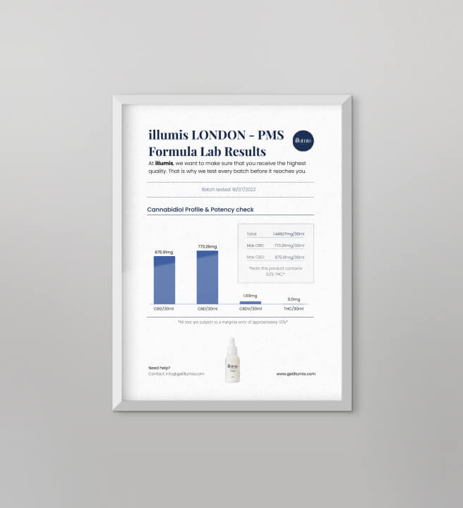

PMS is a disease that can be cured
If you are tormented by an incessant desire to eat sweet, salty or fatty foods, everything around you is annoying, your head hurts, your stomach swells and you have absolutely no energy for your usual activities — say hi to premenstrual syndrome.
There are about 200 symptoms of PMS, and gynecologists estimate that 90% of women experience at least one of them. Alina Marsad, gynecologist-endocrinologist, head of the Family Health Academy, will tell you how to forget about PMS once and for all.
In the International Classification of Diseases, premenstrual syndrome is distinguished as a separate form of the disease. Many people will be surprised to know that such a diagnosis actually exists, despite the stereotype that PMS is a female simulation.
There are many premenstrual symptoms, but they are usually divided into two groups:
Psychological & Behavioral:
- mood swings, depression;
- fatigue, weakness and irritability;
- anxiety, emotional dysregulation;
- cognitive decline, aggression, anger;
- insomnia, increased appetite.
Physical:
- pain in the mammary glands, lower abdomen, skin rash;
- bloating, indigestion, weight gain (transient nature), swelling;
- headaches, back pain;
- muscle weakness;
- incoordination, clumsiness.
What determines the severity of PMS? This condition is determined by several factors. Often, the onset and severity of PMS symptoms is affected by the activity of the hormone progesterone produced by the ovaries immediately after ovulation. But in most cases, PMS is a concern for women with a labile nervous system, prone to tension and stress. It is important to understand that stress hormones trigger the release of the hormone prolactin, which also causes PMS symptoms.
What if PMS does not allow you to live a normal life?
Birth control drugs are usually prescribed for severe premenstrual syndrome. But first it is necessary to take tests and choose a remedy that normalizes hormonal levels. However, hormonal drugs are not the best option. They do not help with all symptoms of PMS, and do not fight depression and mood swings. Therefore, antidepressants are prescribed to relieve the symptoms of depression.
Women struggling with PMS often take several medications at once that suppress the symptoms. But this method is impractical, since the whole body suffers from such therapy. But recently, after repeated research, a non-hormonal remedy has appeared that relieves all the symptoms of PMS. It seems impossible, but biochemists have been working under the formula for PMS for several decades. That’s why there are so many variations of Illumis on the market.

Illumis is a natural product for maintaining and supporting women’s health and getting rid of PMS symptoms. Its main ingredients are CBD and CBG. These are cannabidiols obtained from the Cannabis sativa plant. They have long been known in medicine and do not have an intoxicating effect on the body, but posess strong therapeutic properties. It is the synergy of these components that helps get rid of PMS symptoms and improve women’s health.
CBD and CBG:
- Relieve muscle tension, spasms, pain, inflammation.
- Increase concentration, give energy.
- Do not excite the nervous system, improve mood, fight depression and remove its signs.
- Fight pathogenic bacteria, restore damaged cells, and are a potential inhibitor of cancer.
- Help strengthen bones and prevent osteoporosis.
- Increase the activity of the brain mediator GABA, which inhibits pain, including migraines.
- Stimulate the production of serotonin — the ‘hormone of joy’, which normalizes the psycho-emotional state and fights stress.
- Prevent exacerbation of chronic diseases and their complications.
These two compounds restore metabolic processes in the ovaries, which leads to the normalization of estrogen and progesterone production. Once in the body, they help balance cyclic fluctuations of sex hormones and reduce stress resulting from disrupted interaction between the endocrine and central nervous systems. Additional natural extracts in Illumis also normalize the balance of female hormones in the body, regulate menstrual cycle, and relieve pain. Passing through the gastrointestinal tract, the components of the drug do not break down, but penetrate through the cell membrane to the ovaries and affect their cells. The product improves natural processes in the body and stimulate production of necessary hormones in all phases of the menstrual cycle.

Most importantly, Illumis is completely safe. This was confirmed by tests carried out in independent laboratories, where the product received certificates of analysis (COA). If you suffer from PMS symptoms, you do not need to take antidepressants, antispasmodics, painkillers, and hormone medications. All of them can have a negative impact on the reproductive system and the body as a whole. Illumis is currently the only available and safe remedy that fights PMS symptoms and improves women’s health.
You can purchase Illumis on the manufacturer’s official website. You don’t need a prescription from your doctor, as the product has no banned substances and is completely natural.


Comments 21
Thanks for the article! Ordered 4 packs right away!
Has anyone tried it? Can you share your feedback pls?
Some people believe that the PMS problem is a fictional one. Honestly, a couple of years ago, I myself thought so, until I had a hormonal failure and I felt all the hardships of PMS. Pain, migraines, insomnia, depression, indigestion... I had no idea how to keep working because of the constant weakness and the feeling that I could faint at any moment. But now that I’ve tried Illumis, I’ve forgotten what PMS is at all.
Excellent solution! After two months of taking Illumis, I noticed a significant improvement in my condition and a decrease in anxiety and weakness.
I have a question. I visited my gynecologist a while ago and asked her about my severe PMS. I just wanted to relieve the symptoms and asked her about medications for this. The doctor explained that my hormonal levels were okay so she couldn’t prescribe anything... I still suffer from PMS((( I can’t live a normal life. Ladies, what kind of meds can work out for me? Or maybe you can recommend a good doctor?
Girls, I have the same problem: (I’m so tired... It’s just 10-11 days before periods and my body temperature is 37-37.2. I’m exhausted, my face is burning, I have nausea. In addition, it’s my third period that I have itching in there... What’s wrong with me? I’ve been suffering from severe PMS for about three years already. All the tests are good. My hormone levels are fine, I have no infections, biochemistry, ultrasound, everything is normal. What should I do!?
GPMS was my nightmare... A week before the start of my periods, I had strong causeless hunger and mood swings, which were accompanied by tearfulness, irritability, and impatience. I felt broken... I was energetic in the morning, but in about two or three hours after waking up, wild weakness set in. I could not lift my limbs or get out of bed. I struggled with PMS for many years, but nothing helped. Recently I went to a good specialist and she recommended that I should try this remedy. I didn’t really believe it, because I tried a lot of things in my life, but a miracle did happen! PMS symptoms are gone! Be sure to give it a try too...
I don’t get stomach pain during PMS, but I wake up with a headache and go to sleep with it. This condition lasts until the end of my period. I take about 3-4 painkillers a day in order to function normally. Living like this is impossible... I’m so exhausted. I’ll order it too!
Be sure to try this remedy! After I started taking Illumis, I’ve noticed an improvement in my emotional state and physical condition. Fatigue, pain in the lower abdomen, pulling sensations are gone. My sleep is back to normal and I no longer want to eat too much fatty and sugary foods during my PMS and periods.
I’ve been taking it for one week now, I’m happy so far! I no longer feel broken and I don’t want to cry and kill people around:)
Thanks for the article! Ordered Illumis for myself, my sister and friends. Can’t wait to get the parcel.
In addition to the classic manifestations of periods, such as cramps in the lower abdomen or tearfulness, I have an eating disorder during PMS. Previously, I tried to take antidepressants along with vitamins and painkillers, but their effects only worsened my emotional state, so my doctor canceled them. I don’t know what would have happened if I hadn’t tried Illumis. This natural remedy is a miracle and has completely relieved me of those terrible symptoms!